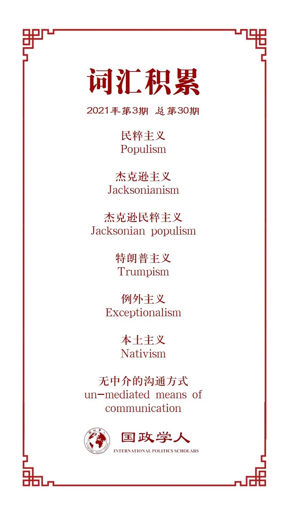

收录于合集 #美国研究 24个

作品简介
【作者】 科琳娜·拉卡特斯（Corina Lacatus），爱丁堡大学政治科学与国际关系系、贝尔法斯特女王大学(Queen ’s University Belfast)希拉里•罗德姆•克林顿(Hillary Rodham Clinton)研究员，即将入职伦敦玛丽女王大学政治与国际关系学院全球治理讲师。她的研究领域是国际关系和比较政治的交叉领域，以及政治传播。
【编译】 吕紫烟（国政学人编译员，山东大学东北亚学院国际政治与经济系本科生）
【校对】 黄慧彬
【审核】 卫艺璇
【排版】 韩心蕊
【美编 】游钜家
【来源】 Lacatus, C. (2021). Populism and President Trump’s approach to foreign policy: An analysis of tweets and rally speeches. Politics , 41(1) , 31–47. https://doi.org/10.1177/0263395720935380
【归档】 《国际关系前沿》2021年第3期，总第30期。
期刊简介
Politics《政治学》发表政治和国际研究领域的前沿同行评议分析。2019年该刊的影响因子为1.375，在政治科学类SSCI期刊中排名88/180，在国际关系类SSCI期刊中排名第42/95。
民粹主义与特朗普的外交政策：
推文与集会演说
Populism and President Trump’s approach to foreign policy:
An analysis of tweets and rally speeches
Corina Lacatus
内容提要
本文将研究特朗普总统在2018年11月中期选举前两个月通过集会演讲和在推特平台上进行的官方竞选交流。分析发现，其外交政策受到了茶党(Tea Party)所推动的杰克逊民粹主义(Jacksonian populism)复兴的影响。 特朗普的民粹主义本质上是反对精英主义、移民和多边主义，怀疑美国维持自由全球秩序的能力，认为该秩序会损害美国人民的经济利益。 此外，分析还发现，他竞选时关于不干预海外军事冲突的言论与其外交政策行动之间存在矛盾。
文章导读
特朗普是“卓越的民粹主义者”。极右民粹主义的思想充斥在他的内政与外交政策中。“特朗普主义”（Trumpism）全是花言巧语。
民粹主义是一种政治修辞，建立在对精英阶层进行道德诽谤的基础之上，精英被他们视为自私、非民主的人。民粹主义者寻求挑战主导秩序，发出体现集体意志的声音。不管他们信奉怎样的意识形态，民粹主义者都承诺要用一种以人民为核心的政治秩序来取代现有腐败。他们否定任何经济、政治或文化特权，认为这些都会对“人民”的共同智慧造成直接威胁。尽管有相似之处，但意识形态确实会影响民粹主义政客的主张，右翼民粹主义者对人民的看法往往充满了民族主义和本土主义。
01
美国背景下的民粹主义与外交政策
在美国历史上，19世纪90年代早期的民粹主义运动本质上是一种农业运动，经常与经济保护主义和政治孤立主义联系在一起，同时在外交政策中强调国内人民主权。在殖民时期，民粹主义是一种对“有教养、有人脉、有收入的人的根深蒂固的憎恨”，民粹主义者因为对政府的不信任而反抗政治秩序，这被称为“杰克逊主义”（Jacksonianism）。
特朗普崛起的本质原因是他使用了杰克逊式的修辞、推进了茶党纲领中的一些关键思想。 在竞选集会上，他用带有攻击性和暴力性的言辞描述他的对手、主流媒体以及他所认为的国际敌对势力。在他担任总统的头几年，这种修辞立场一直没有改变。
杰克逊民粹主义的核心是反精英主义。 而精英往往是政府和政治机构的成员。茶党复兴了杰克逊主义，尤其厌恶那些受过良好教育的自由派知识分子。 他们支持美国例外论的观点，并对美国创建和维护自由秩序的能力深表怀疑。 另外，杰克逊式的民粹主义者倾向于以侵略性的军国主义方式应对世界各地的危机，同时提倡贸易保护主义，摒弃代价高昂的联盟。 在他们看来，美国无意成为维护自由主义全球秩序的世界警察，但如果有国家违反国际义务或攻击美国，可以发动战争。
该分析选取了2018年9月至11月期间，特朗普发表的官方演讲文本以及他在推特个人官方账户上所发布的推文，原因有两个。首先， 民粹主义政客倾向于通过无中介的方式与公众沟通 ，而不是通过被认为是腐败且传播“假新闻”的主流媒体。而在推特和集会演讲上的发言在修辞上不那么精英化。其次，在定性内容分析中包含两种类型的文本数据可以增强分析的有效性。
表一：集会演讲和推文所涉及主题(超过50次提及)
推特（Twitter）是一个社交网络平台，允许用户发布不超过140个字符的简短推文。自2006年推出以来，越来越多的政客将社交网络用于竞选目的。在某些方面，社交媒体为宣扬民粹主义思想提供了理想的途径。民粹主义者重视与民众进行无中介沟通，而社交媒体恰好可以实现这一点。此外， 社交媒体通过碎片化的交流方式，让读者可以根据自己的政治态度整合意识形态元素。 截至2018年11月8日，特朗普的账户有5560万粉丝。他在推特上分享的信息范围非常广泛，包括他和夫人的日常活动、重要新闻、对“假新闻”的引用与回应、国内和国际事件的公告，以及中期选举的宣传等等。
表二：推文所涉及的主题(超过10次提及)
在中期选举的前两个月，特朗普举办的集会数量显著增长。11月初，他每天参与三、四个集会。 集会同样也可以通过直接沟通和政治动员，以及持续的民粹主义“表现”，从而减少政治家和观众之间的心理距离。
表三：集会演讲所涉及主题(超过40次提及)
02
民粹主义与特朗普总统的外交政策
在与选民沟通时，特朗普采用了与茶党立场一致的杰克逊式言论。 人们可能会认为，作为总统，其公共话语将不那么民粹主义化，而是更加“总统化”，以符合公认的政治主流言论。但实际上并没有。
美国总统所面临的最大挑战之一是争取国内对其外交政策的支持。 为此，特朗普继续将自己标榜为总统的最佳人选，并在2018年继续利用民粹主义言论来获取更广泛的支持。显而易见，他在对前几届政府和民主党人的恶毒批评中，夹杂着对迄今支持其政府政策的共和党人的称赞，以及对他就职以来所进行的总统活动的公开称赞。无论是演讲还是推文，特朗普都向选民传达了一个清晰的信息，就像许多集会标语上印的那样：“做出了承诺；践行了承诺”（Promises made; promises kept）。特朗普总统是一个说话算话的人，尽管面临民主党的反对，但他还是尽量履行了那些承诺。
自2018年以来，特朗普继续在推特和集会演讲上批评自由派精英，并提出关于美国世界地位例外论和本土主义观点，这与极右翼民粹主义者的言论相符。 特朗普的官方言论集中在需要立即纠正三个主要的外交政策——与主要贸易伙伴就现有贸易协定进行重新谈判、加强美国在世界上的军事地位、遏制非法移民。他质疑美国是否需要继续维护旧的自由秩序，质疑多边组织和传统联盟。
特朗普认为，多年来，在国际事务上美国优先考虑的是外国利益，而不是本国国内利益。他的修辞立场与杰克逊民粹主义一致，因为他提倡国际安全的军国主义观点，同时提出要对国际协议重新进行根本性的定义，并考虑未来退出国际条约。
由于糟糕的国际贸易协议和移民控制，以及非法移民所带来的持续性威胁，“人民”被剥夺了公民权，而强烈的民族主义思想与美国的国际例外主义结合在了一起。在特朗普的演讲中，“美国人民”指的是美国中西部和南部被剥夺了公民权的工人。为了确保美国公民的就业和福利，他对一些国家加征关税，签订了新的贸易协定。他认为非法移民是恶毒的、犯罪的，直接威胁了美国人的人身安全、就业和公共服务。他还威胁要动用军事力量来压制非法越境的行为。
尽管特朗普在竞选期间曾表示要避免卷入外国事务，但实际上，特朗普政府一直坚持与世界上最强大的军事大国进行地缘政治竞争，也维持着正式的联盟关系。打击恐怖主义是特朗普2016年竞选时的重要议程，但2018年他提及恐怖主义的频率大幅减少。
在特朗普的公开言论中，“美国人民”的经济利益决定了美国国内的优先事项，也决定了外交政策的优先事项。他认为，一个依靠美国更大财政承诺和更强大军事支持来维持的世界秩序本质上是不公平且带有剥削性的。他把美国看作国际金融援助的受害者。 最终，特朗普的外交政策是由带有强烈民族主义色彩的杰克逊传统民粹主义驱动的，这种民粹主义又推动了例外主义，并对美国推进全球自由秩序的能力深表怀疑。
03
总结
特朗普总统任期内最引人注目、也最令人震惊的方面之一是他的言论。他经常使用社交媒体与公众进行交流，这在白宫是前所未有的。特朗普的公共演讲涉及民粹主义——他反对精英阶层，却声称自己代表美国人民的最大利益。这种民粹主义言论在他就职后仍然存在，并蔓延到外交政策中。
分析发现，特朗普总统在中期选举之前继续使用民粹主义言论来吸引选民。他夸大其词地谈到美国中西部和南部被剥夺公民权的社区出现了前所未有的经济增长和失业率显著下降。出现这些积极信号的原因是他对非法移民的实行了更加严格的控制，以及谈判达成了对美国更加有利的贸易协议。特朗普认为自己是历史上最有成就的总统，并以经济、军事和外交政策来证明他的成功。
杰克逊式民粹主义的复兴融入了他“美国优先”的外交政策。他蔑视自由派精英以及他们关于国际合作、多边主义和全球自由秩序的理想。他寻求重新谈判更有利于增加美国人民财富和福祉的新贸易协议。他对美国继续维持自由秩序的能力深表怀疑。他主张美国需要从这一大堆无利可图的国际联盟中收回主权。 在这种背景下，民粹主义言论为其外交政策提供了解释，即服务于美国人民的利益。
此外，分析还发现，特朗普关于军事干预的民粹主义言论与行动并不一致。在推特和集会演讲中，他坚持强调要彻底退出国际干预，同时辩称继续建立强大的军事力量的重要性。这与他的外交政策行动形成了鲜明对比。这表明特朗普愿意满足茶党中两个主要派系的要求——佩林（Palin）式的有限国际干预，以及罗恩·保罗（Ron Paul）式的完全退出国际干预。
译者评述
本文选取了特朗普在竞选活动中的两类代表性活动——发推特和集会演讲，通过研究他发文或演说的内容及表达方式，来解析背后所体现的民粹主义。同时，本文也有助于我们更好地理解特朗普这种民粹主义言论对其外交政策的影响。
特朗普入主白宫以后，正式开启“推特治国”时代，一跃成为推特上粉丝量排名第二的政客，他借助社交媒体高频度、同质性的信息传递方式，在同主流媒体的对抗中始终占据着舆论场的焦点。面对稀缺的公众注意力，他选择持续地发布信息，以使信息触及公众的可能性最大化。另外，由于社交媒体信息的易获取性，公众对于信息的个性化需求也愈加强烈，公众会依据自己的兴趣和动机来主动获取信息。在社会民意分裂的美国，特朗普作为底层民众的代言人，在推特上吸引了大量构成相对稳定的同质粉丝群体。更有研究进一步发现，特朗普用这种方式吸引了大量政治知识水平低下、原本对政治思想不太感兴趣的选民，这导致他的推文极易形成舆论场的“水波效应”。
特朗普将美国的相对衰落视为精英群体造成的结果。尽管他也经常吹嘘自己很富有，但在他看来，自己并不是精英中的一员。相反，他经常攻击精英群体。特朗普的娱乐圈背景使他具备将自己与精英圈区分开的经验和技能。比如，他通过使用侮辱性的绰号对个别政客进行嘲讽，从而使自己站在了传统建制派的对立面。他还通过使用像“赢家”（winnings）和“输家”（losers）这样的俚语，强化了一种粗俗的方言风格。这不仅具有娱乐价值，也在一定程度上为他带来了政治成功，“和特朗普一起笑，支持者们获得了力量”。
有人说，特朗普的当选代表了一场彻头彻尾的“杰克逊叛乱”：“70年来，美国人民第一次选出了一位贬低战后美国外交政策核心的政策、理念和制度的总统。”特朗普自己也声称他与长期影响美国外交政策制定的杰克逊主义有着强烈的共鸣。特朗普的民粹主义言论确实构建了一种基于民族主义、重商主义和硬实力的杰克逊式意识形态。
参考文献
[1]王莉丽 & 刘子豪.(2018).后真相时代特朗普“推特治国”舆论传播特点及启示. 国外社会科学(03),43-50。
[2]Fording, Richard C., and Sanford F. Schram(2017). “The cognitive and emotional sources of Trump support: The case of low-information voters.” New Political Science 39. (4) : 670-686.
[3]高红梅.(2018).“推特治国”:美国总统特朗普的政治营销——以2017年美国总统特朗普访华为例. 东南传播(04),62-64。
[4]he Framing of American Decline. International Relation s , 33 (4). 517-539.
词汇整理

文章观点不代表本平台观点，本平台评译分享的文章均出于专业学习之用, 不以任何盈利为目的，内容主要呈现对原文的介绍，原文内容请通过各高校购买的数据库自行下载。
好好学习，天天“在看”
国政学人
支持学术公益与知识传播
微信扫一扫赞赏作者 __赞赏
已喜欢，对作者说句悄悄话
取消 __
发送给作者
发送
最多40字，当前共字
上一页 1/3 下一页
长按二维码向我转账
支持学术公益与知识传播
受苹果公司新规定影响，微信 iOS 版的赞赏功能被关闭，可通过二维码转账支持公众号。